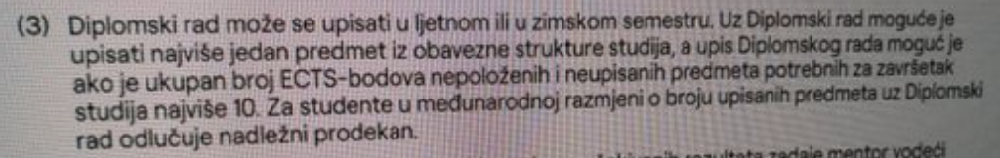

allien login
pise 10 ects nepolozeno i neupisano, meni se cini ko da je to broj ects zima+ljeto (zima nepolozeno na drugoj, ljeto pad na prvoj godini), a na ljetno je jos ogranicenje da je samo 1 predmet neovisno o broju ects-a (ako se dipl rad upisuje na ljeto ofc)
dakle ako ostavis 11+ ects iz zime za ljeto/jesen, prema ovom ti se dipl rad nece upisati? ja mislim, tak mi je i frendica objasnila da je ona tak skuzila. ona je doduse htjela upisat rad pa je polozila te predmete pa nez jel se zaista ne upise

soz na slikanom ekranu, iskopala sam sliku koju mi je frendica poslala